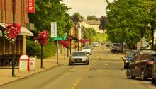

A Nordic Town: Levanger
A Nordic Town

This project has conducted in from January to June 2020. The essential purpose of the project is to photograph how life is going in the town in mid-north of Norway
Levanger Kommune

I would like to thank the people of Levanger for hospitality and understanding. Also I would like to express my thankfulness to my parents and my friends because of support to me with courage in every sense realise my dream.
Historie
This book aims to record and demonstrate daily life routines in a Scandinavian town. In general, the book photographs the historical and cultural issues as well as the lifestyle of the townspeople
Naturen i Levanger

Levanger has an unspoiled nature with its rich animal and plant life. It also has beautiful landscapes such as a small boat marina and a city park.